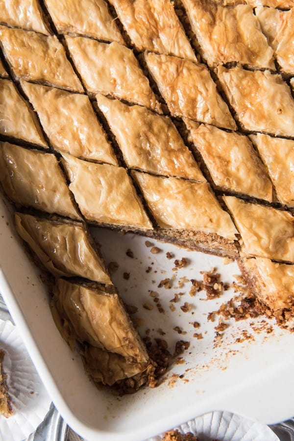

Baklava

Description
This is truly the food of gods! Let's not think too deeply about the Norse vs Greek issues at play here...
Shamelessly stolen from schwintosky at AllRecipes.
Ingredients
Syrup
- ¾ cup water
- ¾ cup white sugar
- ¼ cup orange juice
- 1 ½ cups honey
- 1 tablespoon ground cinnamon
Pastry
- ¾ cup white sugar
- ½ teaspoon ground cinnamon
- ⅛ teaspoon ground nutmeg
- 2 cups ground walnuts
- 1 (16 ounce) package phyllo dough
- 1 ½ cups melted butter
Steps
- Make the syrup by bringing the water, 3/4 cup sugar, orange juice, honey, and 1 tablespoon cinnamon to a boil in a saucepan over medium-high heat. Reduce heat to medium-low and simmer 10 minutes. Remove from heat and allow to cool to room temperature.
- Preheat an oven to 325 degrees F (165 degrees C). Butter a 10x15 inch baking dish.
- Stir together 3/4 cup sugar, 1/2 teaspoon cinnamon, nutmeg, and ground walnuts until evenly blended; set aside.
- Press 2 sheets of phyllo into the prepared dish and brush with melted butter. Continue adding phyllo sheets brushed with butter two at a time until you have 12 sheets total. Sprinkle 1/3 of the walnut mixture evenly over the phyllo, then add another 6 sheets, buttering between every two. Sprinkle 1/2 of the remaining walnut mixture evenly over the phyllo; top with another 6 buttered phyllo sheets. Finally, sprinkle the remaining walnut mixture onto the phyllo. Place the remaining phyllo on top of the baklava, buttering every two sheets. Brush the remaining butter onto the top of the baklava.
- Bake in the preheated oven until the phyllo is golden brown and crispy, about 1 hour. Remove from the oven; pour the cooled syrup over the hot baklava. Cool to room temperature before cutting into 1-inch squares or diamonds to serve.
< Back to index